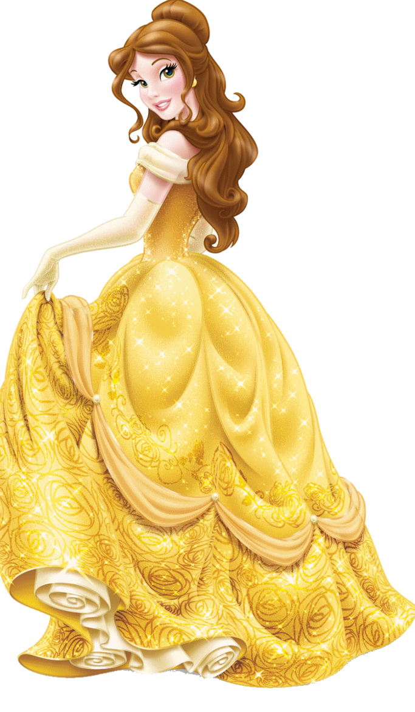
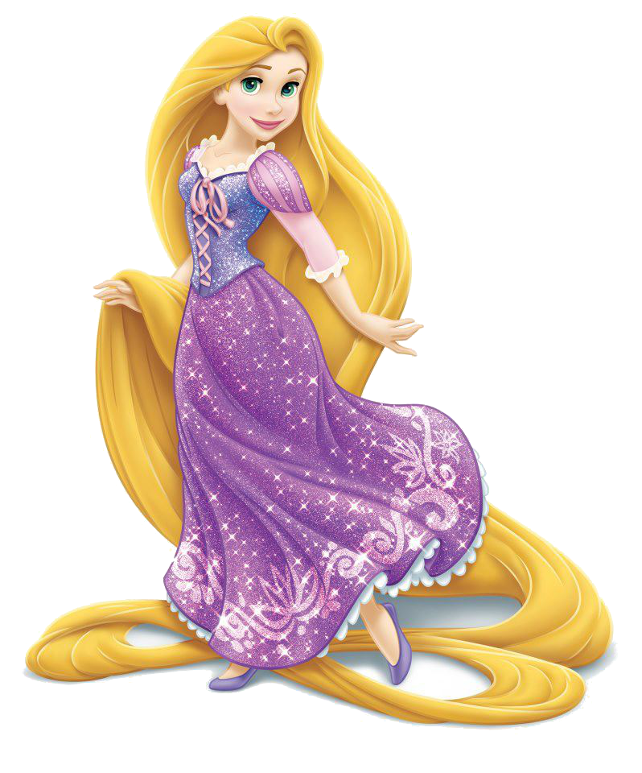
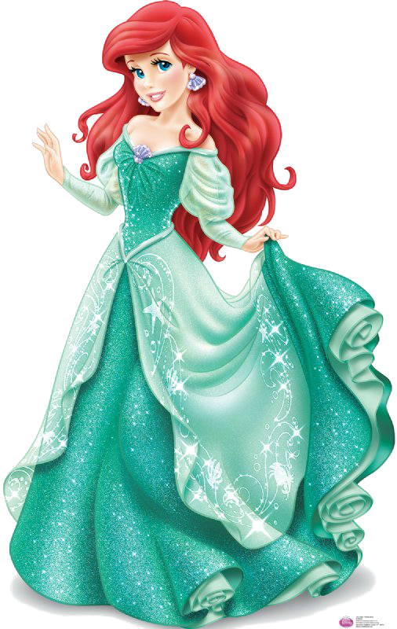
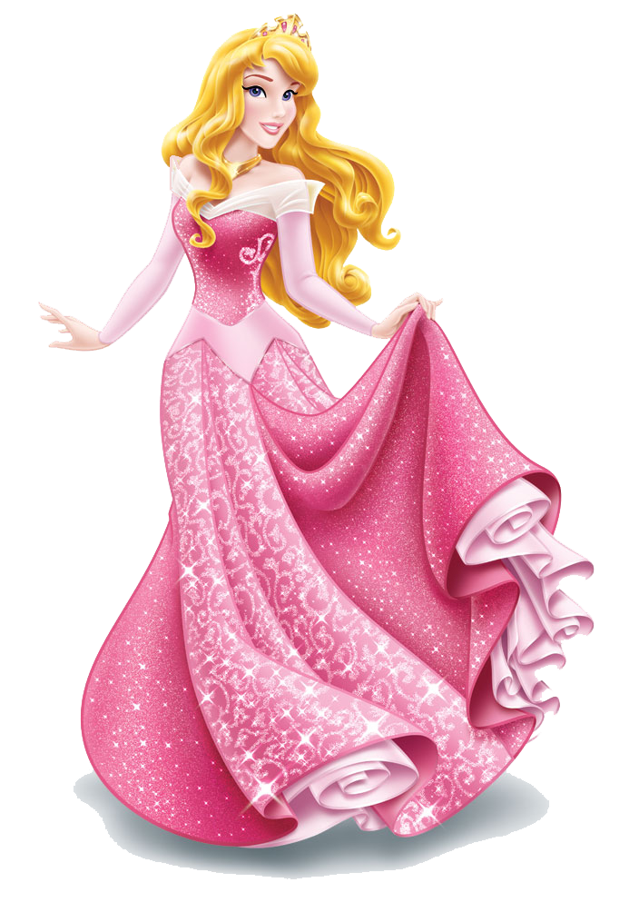
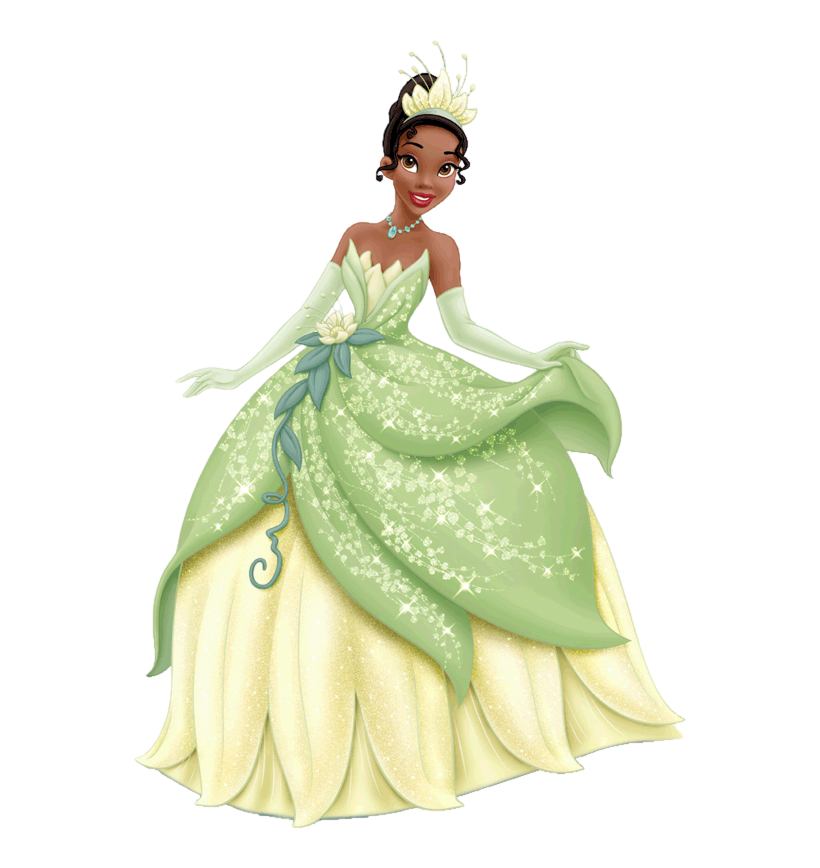

Disney Princesses

Belle
Quote: "What do you know about my dreams, Gaston?"
Background: Belle is the titular female protagonist of Disney's 1991 animated feature film Beauty and the Beast. She is the only daughter of Maurice, an inventor with whom she resides in a small French village. The townsfolk labeled Belle an outcast because of her free spirit. She dreams of escaping her “poor provincial town” in France. Belle's passion for fantastical stories, coupled with her outcast status, left her yearning for a life of adventure outside her small village. She is beautiful but is unaware of her own good looks, in which Gaston constantly pursues her. She unexpectedly gets her wish when she falls in love with the Beast after saving her father. Ultimately, when Belle embarks on her unexpected adventure, she winds up trading her own freedom for her father’s, learning from the castle’s residents and the Beast himself, and creating a new life for herself.
Personality: Belle is a very intelligent woman, gaining a significant amount of knowledge over the years through her love for books, providing her with amazing vocabulary and active imagination. She is very confident and outspoken in her opinions. Belle is known throughout the village for her beauty, though she doesn’t acknowledge this. Being wise in her decisions, Belle is quite obstinate when it comes to upholding her opinions and who she interacts with.

Rapunzel
Quote: “I spent my whole life in this tower, but I am ready to break free!”
Background: As a baby, Rapunzel was abducted by Mother Gothel and locked away in a remote tower for eighteen years. She grew fascinated with the phenomenon of floating lights that appeared on her birthday. With Flynn Rider’s help, she escaped to pursue her dream of exploring the outside world and eventually discovered she was the lost princess of Corona.
Personality: Rapunzel is creative, spirited, and deeply curious about the world. She is optimistic and open-hearted, always willing to step outside her comfort zone to discover new experiences.

Ariel
Quote: “There is a world where hopes and dreams last for all time.”
Background: Ariel is the youngest daughter of King Triton and is fascinated by the human world. Her longing for life beyond the sea leads her to make a dangerous deal with Ursula in exchange for legs. Through courage and sacrifice, she earns her place in the human world.
Personality: Ariel is adventurous, curious, and strong-willed. Her bravery and compassion drive her to follow her dreams despite the risks.

Aurora
Quote: “If you dream a thing more than once, it’s sure to come true.”
Background: Cursed by Maleficent at birth, Aurora is hidden away for protection. Raised by three fairies, she grows up graceful and kind, ultimately fulfilling her destiny.
Personality: Aurora is gentle, romantic, and deeply compassionate, embodying elegance and hope.

Tiana
Quote: "Fairytales can come true, but you gotta make them happen."
Background: Tiana dreams of opening her own restaurant through hard work. After kissing Prince Naveen in frog form, she embarks on a journey that teaches her about love, perseverance, and purpose.
Personality: Tiana is disciplined, hardworking, and independent. She represents determination and the power of perseverance.